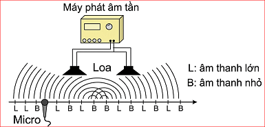
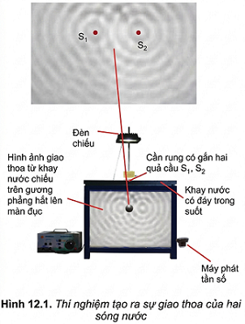
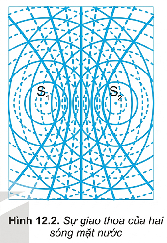
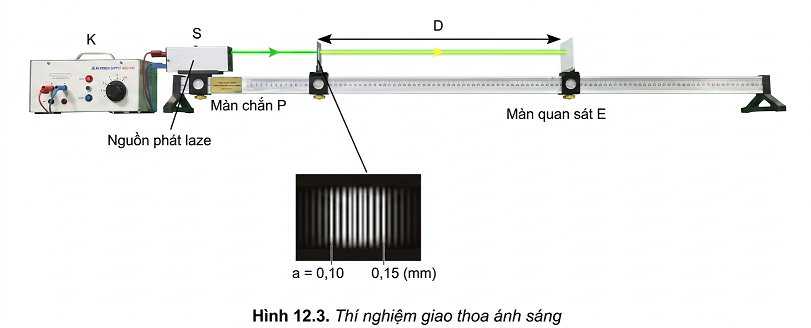
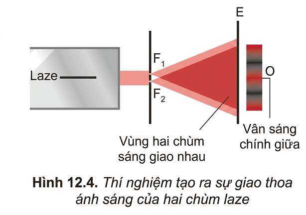
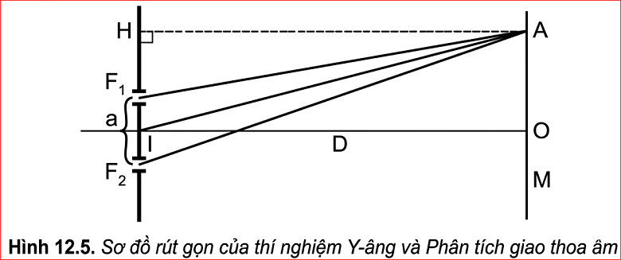

"Cho hai loa giống nhau cùng phát âm thanh như hình bên, dịch chuyển một micro có nối với dao động kí phía trước hai loa để ghi đô thị sóng âm thì thấy có những điểm tại đó biên độ sóng âm thu được rất lớn (L) và những điểm biên độ rất bé (B) nằm xen kẽ. Hiện tượng thú vị này giải thích như thế nào?"

Hướng giải quyết: Đây là hiện tượng giao thoa sóng âm. Hai loa đóng vai trò là hai nguồn kết hợp (phát ra sóng âm cùng tần số, có độ lệch pha không đổi). Trong không gian, hai sóng này gặp nhau.
- Tại các điểm (L), hai sóng lan truyền tới dao động cùng pha với nhau, chúng tăng cường lẫn nhau tạo ra âm thanh lớn (cực đại giao thoa).
- Tại các điểm (B), hai sóng lan truyền tới dao động ngược pha với nhau, chúng triệt tiêu nhau tạo ra âm thanh rất nhỏ (cực tiểu giao thoa).
I. HIỆN TƯỢNG GIAO THOA CỦA HAI SÓNG MẶT NƯỚC
1. Thí nghiệm
Chuẩn bị:
Đèn chiếu.
Cần rung có gắn một quả cầu.
Cần rung có gắn hai quả cầu.
Khay nước có đáy trong suốt.
Gương phẳng đặt hợp với đáy khay nước một góc \(45^{\circ}\) để thu hình ảnh giao thoa chiếu trên màn thẳng đứng.

Hình 12.1. Thí nghiệm tạo ra sự giao thoa của hai sóng nước
Tiến hành:
Bước 1: Cho cần rung có gắn một quả cầu dao động, quan sát hình ảnh sóng trên màn thẳng đứng.
Bước 2: Cho cần rung có gắn hai quả cầu dao động, quan sát hình ảnh sóng trên màn thẳng đứng và rút ra nhận xét.
Bước 3: Dùng bút nối các điểm dao động cực đại (các điểm tối) trên màn ta thu được các đường cong liền nét như trên Hình 12.2. Tương tự ta nối các điểm dao động cực tiểu trên màn ta thu được các đường cong đứt nét như trên Hình 12.2.
Kết quả:
Đối với cần rung có gắn một quả cầu, hình ảnh trên màn thẳng đứng cho thấy có các hình tròn sáng, tối đồng tâm xen kẽ, lan truyền từ tâm dao động ra xa.
Đối với cần rung có gắn hai quả cầu, hình ảnh trên màn thẳng đứng ta thấy ảnh của các gợn sóng là các đường sáng và tối ổn định. Các đường này được biểu diễn như trong Hình 12.2

Hình 12.2. Sự giao thoa của hai sóng mặt nước
2. Giải thích
a) Để giải thích hiện tượng trên, ta cần biết thêm một đặc điểm nữa của chuyển động sóng: Mỗi nguồn sóng phát ra một sóng có các gợn sóng là những đường tròn giống hệt như khi không có các nguồn sóng khác ở bên cạnh.
Những điểm nào cách nguồn một khoảng bằng \(k\lambda\) thì dao động đồng pha với nguồn, còn những điểm nào cách nguồn một khoảng \((k+\frac{1}{2})\lambda\) thì dao động ngược pha với nguồn.
b) Trong thí nghiệm ta đã dùng hai nguồn sóng giống hệt nhau dao động theo phương vuông góc với mặt nước. Vì thế, trên mặt nước có những điểm đứng yên, do hai sóng gặp nhau ở đó dao động ngược pha, triệt tiêu nhau. Có những điểm dao động rất mạnh do hai sóng ở đó dao động đồng pha.
c) Ánh sáng truyền qua những điểm đứng yên không bị cản trở, nên cho ảnh là những hypebol rất sáng. Còn ánh sáng truyền qua những điểm dao động mạnh thì bị tán xạ nên cho ảnh là những đường hypebol nhoè và tối.
Kết luận: Hiện tượng hai sóng gặp nhau tạo nên các gợn sóng ổn định gọi là hiện tượng giao thoa của hai sóng. Các gợn sóng ổn định gọi là các vân giao thoa.
3. Điều kiện để xảy ra giao thoa
Để xảy ra hiện tượng giao thoa hai nguồn sóng phải:
Dao động cùng phương, cùng tần số.
Có độ lệch pha không đổi theo thời gian.
Hai nguồn như vậy gọi là hai nguồn kết hợp. Hai sóng do hai nguồn kết hợp phát ra gọi là hai sóng kết hợp.
Hiện tượng giao thoa là một hiện tượng đặc trưng của sóng. Vì thế, mọi quá trình vật lí nào gây ra được hiện tượng giao thoa cũng tất yếu là một quá trình sóng.
?
Câu hỏi thảo luận
Giải thích hiện tượng nêu ở mục khởi động của đầu bài.
Trả lời:
Hiện tượng ở phần mở đầu chính là hiện tượng giao thoa sóng âm trong không khí.
- Hai loa được nối cùng một máy phát âm tần nên chúng là hai nguồn kết hợp (cùng phương, cùng tần số, độ lệch pha không đổi).
- Tại các vị trí thu được âm lớn (L), sóng từ hai loa truyền tới gặp nhau và đồng pha, chúng tăng cường biên độ của nhau tạo thành cực đại giao thoa.
- Tại các vị trí thu được âm nhỏ (B), sóng từ hai loa truyền tới gặp nhau và ngược pha, chúng triệt tiêu nhau tạo thành cực tiểu giao thoa.
II. THÍ NGHIỆM CỦA YOUNG (Y-ÂNG) VỀ GIAO THOA ÁNH SÁNG
1. Thí nghiệm
Tương tự như sóng nước, làm thí nghiệm về giao thoa của hai nguồn sóng ánh sáng kết hợp. Thí nghiệm được bố trí như Hình 12.3.
Ánh sáng phát ra từ nguồn S chiếu vào hai khe hẹp \(F_{1}\), \(F_{2}\). Hai khe hẹp này là hai nguồn kết hợp.

Hình 12.3. Thí nghiệm giao thoa ánh sáng

Hình 12.4. Thí nghiệm tạo ra sự giao thoa ánh sáng của hai chùm laze
?
Trong thí nghiệm trên, nếu thay nguồn sáng laze trong thí nghiệm trên bằng bóng đèn dây tóc phát ánh sáng trắng thì vân sáng chính giữa sẽ có màu gì?
Trả lời:
Nếu thay nguồn phát laze (đơn sắc) bằng nguồn ánh sáng trắng (đa sắc), tại vị trí vân chính giữa (vị trí O), hiệu đường đi của hai sóng từ 2 nguồn luôn bằng 0 đối với mọi bước sóng.
Do đó, mọi bức xạ đơn sắc trong ánh sáng trắng đều cho vân sáng cực đại tại O. Sự tổng hợp của các vân sáng đơn sắc này tạo ra vân sáng chính giữa có màu trắng.
Trong vùng hai chùm sáng gặp nhau lại có những vạch tối và vạch sáng xen kẽ như trên Hình 12.4 đã khẳng định ánh sáng có tính chất sóng. Những vạch tối là chỗ hai sóng ánh sáng triệt tiêu lẫn nhau. Những vạch sáng là chỗ hai sóng ánh sáng tăng cường lẫn nhau. Những vạch sáng và tối xen kẽ nhau chính là hệ vân giao thoa của hai sóng ánh sáng.
2. Công thức xác định bước sóng \(\lambda\) của ánh sáng
Hình 12.5 là sơ đồ rút gọn của thí nghiệm Y-âng. Gọi:
O: là vị trí tại đó xuất hiện vân sáng chính giữa.
a: là khoảng cách giữa hai khe: \(a = F_{1}F_{2}\).
D: là khoảng cách từ hai khe đến màn quan sát: \(D = IO\).
i: là khoảng vân. Đó là khoảng cách giữa hai vân sáng hoặc hai vân tối liên tiếp.
Nếu đo được a, D và i thì sẽ xác định được bước sóng \(\lambda\) theo công thức sau:
\(\lambda = \frac{ia}{D}\)

Hình 12.5. Sơ đồ rút gọn của thí nghiệm Y-âng
BÀI TẬP CUỐI BÀI
Bài 1:
Trong thí nghiệm ở Hình 12.1, tốc độ truyền sóng trên mặt nước là \(50\text{ cm/s}\), cần rung có tần số \(40\text{ Hz}\). Tính khoảng cách giữa hai điểm cực đại giao thoa cạnh nhau trên đoạn thẳng \(S_{1}S_{2}\).
Lời giải:
- Bước sóng của sóng nước là:
\(\lambda = \frac{v}{f} = \frac{50}{40} = 1,25\text{ cm}\)
- Khoảng cách giữa hai điểm cực đại giao thoa liên tiếp nằm trên đoạn thẳng nối hai nguồn (đoạn \(S_{1}S_{2}\)) bằng một nửa bước sóng:
\(d = \frac{\lambda}{2} = \frac{1,25}{2} = 0,625\text{ cm}\). Đáp số: \(0,625\text{ cm}\)
Bài 2:
Trong một thí nghiệm Y-âng về giao thoa ánh sáng với \(a = 0,2\text{ mm}\), \(D = 1,2\text{ m}\), người ta đo được \(i = 0,36\text{ mm}\). Tính bước sóng \(\lambda\) và tần số \(f\) của bức xạ.
Lời giải:
- Áp dụng công thức tính bước sóng:
\(\lambda = \frac{ia}{D}\)
Thay số (đổi về cùng đơn vị hoặc dùng hệ đơn vị chuẩn mm, m, \(\mu m\)):
\(\lambda = \frac{0,36\text{ mm} \cdot 0,2\text{ mm}}{1,2\text{ m}} = 0,06\text{ }\mu\text{m}\)
- Tần số bức xạ (lấy \(c = 3 \cdot 10^8\text{ m/s}\)):
\(f = \frac{c}{\lambda} = \frac{3 \cdot 10^8}{0,06 \cdot 10^{-6}} = 5 \cdot 10^{15}\text{ Hz}\). Lưu ý: Với giá trị tính được \(0,06\text{ }\mu\text{m}\), bức xạ này thuộc vùng tử ngoại.
Bài 3:
Trong một thí nghiệm Y-âng, biết \(a = 0,15\text{ mm}\), \(D = 1,20\text{ m}\), khoảng cách giữa 12 vân sáng liên tiếp là \(5,2\text{ mm}\). Tính bước sóng ánh sáng.
Lời giải:
- Khoảng cách giữa \(n\) vân sáng liên tiếp là \((n-1)i\). Do đó, khoảng cách giữa 12 vân sáng liên tiếp là \(11i\).
Ta có: \(11i = 5,2\text{ mm} \Rightarrow i = \frac{5,2}{11} \approx 0,4727\text{ mm}\).
- Bước sóng ánh sáng dùng trong thí nghiệm là:
\(\lambda = \frac{ia}{D} = \frac{\frac{5,2}{11} \cdot 0,15}{1,20} \approx 0,059\text{ }\mu\text{m}\). Đáp số: \(\lambda \approx 0,059\text{ }\mu\text{m}\)
Em đã học
■ Hai nguồn sóng kết hợp là hai nguồn có cùng tần số và có độ lệch pha không đổi theo thời gian. Hai sóng do hai nguồn kết hợp phát ra là hai sóng kết hợp.
■ Hiện tượng giao thoa là hiện tượng khi hai sóng kết hợp gặp nhau thì có những điểm ở đó hai sóng luôn đồng pha thì dao động mạnh; có những điểm ở đó hai sóng luôn ngược pha thì đứng yên.
■ Bước sóng: lambda = v/f (trong đó: a là khoảng cách giữa hai nguồn kết hợp, D là khoảng cách từ hai nguồn kết hợp đến màn quan sát, i là khoảng vân).
Em có thể
⭐ Từ hiện tượng giao thoa sóng nước, giải thích hiện được tượng giao thoa của các sóng khác như sóng âm, sóng ánh sáng.
⭐ Xét 2 nguồn sóng đồng pha
ĐK hiệu đường đi từ hai nguồn đến điểm Cực đại : \(d_1 - d_2=k\lambda\)(k = 0,\(\pm 1\),\(\pm 2,...)\)
ĐK hiệu đường đi từ hai nguồn đến điểm Cực đại : \(d_1 - d_2=(k+\frac{1}{2})\lambda\)(k = 0,\(\pm 1\),\(\pm 2,...)\)
BÀI TẬP VẬN DỤNG TÍNH TOÁN (BỔ SUNG)
Câu 1:
Hai nguồn phát sóng kết hợp \(A\) và \(B\) trên mặt nước dao động cùng pha với tần số \(f = 20\text{ Hz}\). Tốc độ truyền sóng trên mặt nước là \(v = 30\text{ cm/s}\). Tính khoảng cách giữa 5 gợn lồi (cực đại) liên tiếp nằm trên đoạn thẳng nối \(A\) và \(B\).
Lời giải:
- Bước sóng: \(\lambda = \frac{v}{f} = \frac{30}{20} = 1,5\text{ cm}\).
- Khoảng cách giữa 2 cực đại liên tiếp trên đoạn AB là \(d = \frac{\lambda}{2} = 0,75\text{ cm}\).
- Khoảng cách giữa 5 cực đại liên tiếp bao gồm 4 khoảng cực đại.
Vậy khoảng cách cần tìm là: \(L = 4 \cdot \frac{\lambda}{2} = 4 \cdot 0,75 = 3\text{ cm}\).
Câu 2:
Trong thí nghiệm Y-âng về giao thoa ánh sáng, khoảng cách giữa 2 khe là \(a = 1\text{ mm}\), khoảng cách từ mặt phẳng chứa 2 khe đến màn quan sát là \(D = 2\text{ m}\). Nguồn phát ra ánh sáng đơn sắc có bước sóng \(\lambda = 0,5\text{ }\mu\text{m}\). Tính khoảng cách từ vân sáng bậc 3 đến vân trung tâm.
Lời giải:
- Khoảng vân: \(i = \frac{\lambda D}{a} = \frac{0,5 \cdot 2}{1} = 1\text{ mm}\).
- Vị trí vân sáng bậc 3 (so với vân trung tâm) cách vân trung tâm một đoạn: \(x = 3i\).
- Suy ra: \(x = 3 \cdot 1\text{ mm} = 3\text{ mm}\).
Câu 3:
Trong thí nghiệm Y-âng, khoảng vân đo được trên màn là \(i = 1,2\text{ mm}\). Xét điểm \(M\) trên màn cách vân sáng trung tâm một đoạn \(x_M = 3,6\text{ mm}\) và điểm \(N\) cách vân trung tâm \(x_N = 5,4\text{ mm}\). Hỏi tại \(M\) và \(N\) là vân sáng hay vân tối bậc (thứ) mấy?
Lời giải:
- Tại điểm \(M\): Lập tỉ số \(\frac{x_M}{i} = \frac{3,6}{1,2} = 3\). Số nguyên, do đó tại \(M\) là vân sáng bậc 3.
- Tại điểm \(N\): Lập tỉ số \(\frac{x_N}{i} = \frac{5,4}{1,2} = 4,5 = 4 + 0,5\). Dạng bán nguyên (\(k + 0,5\)), với \(k=4\). Do đó tại \(N\) là vân tối thứ 5.